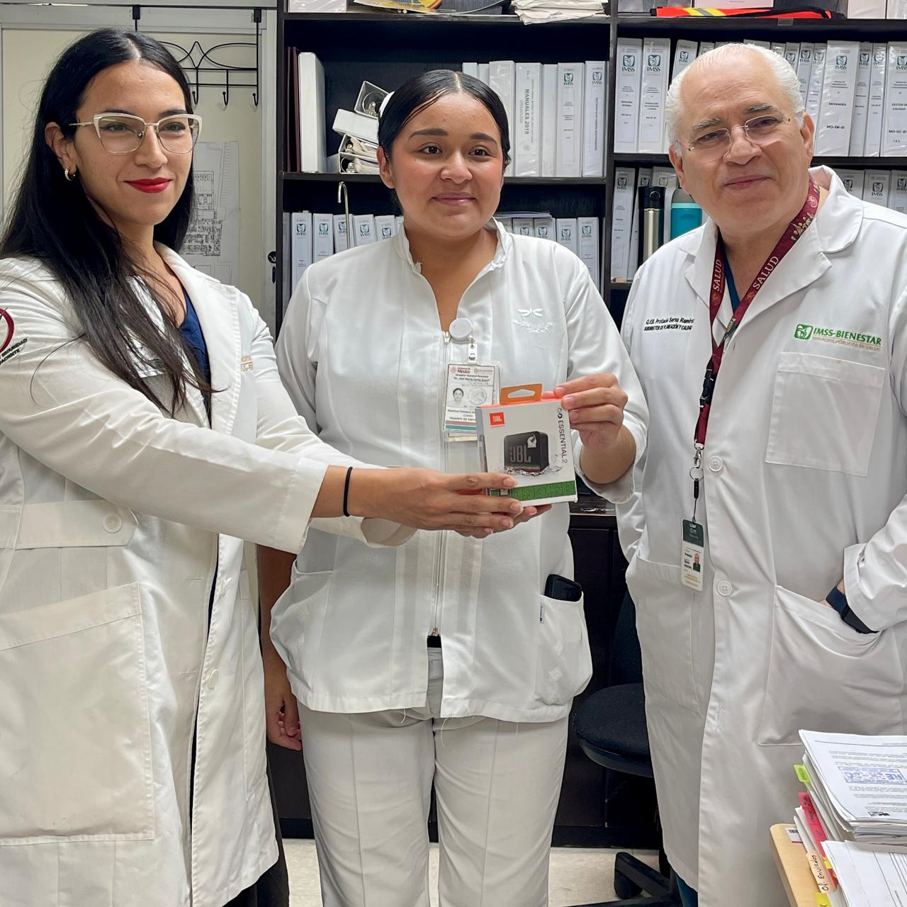
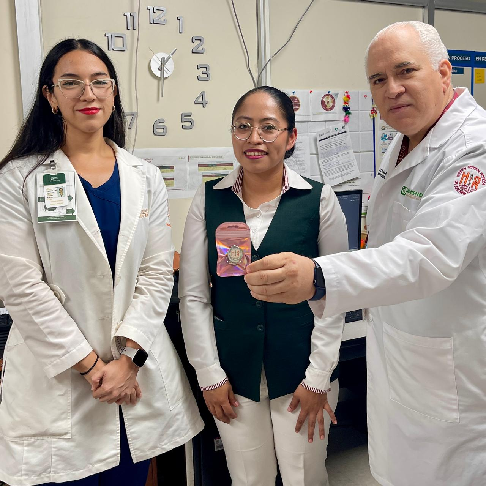
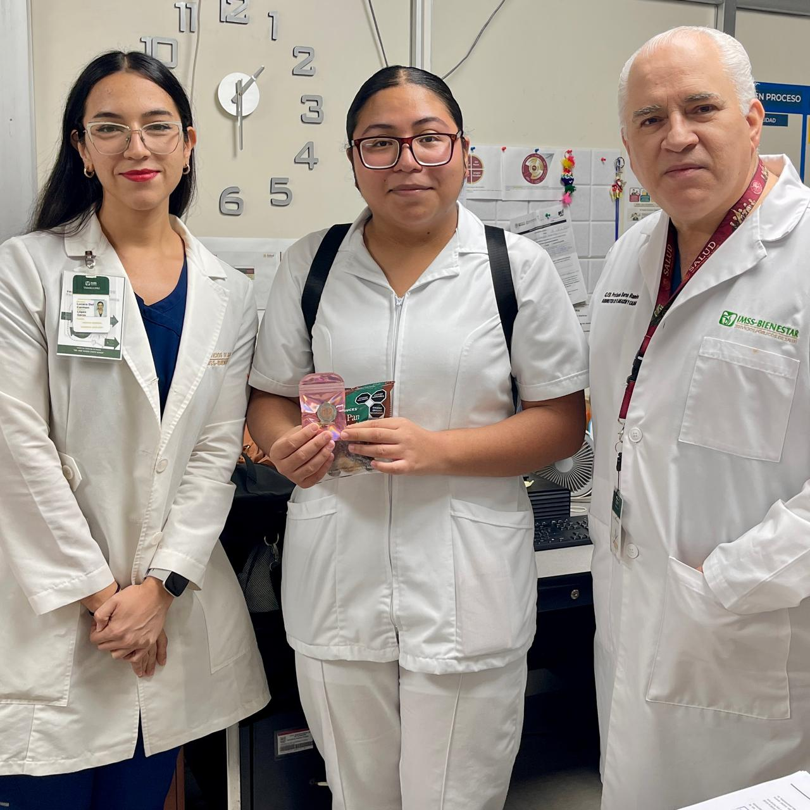
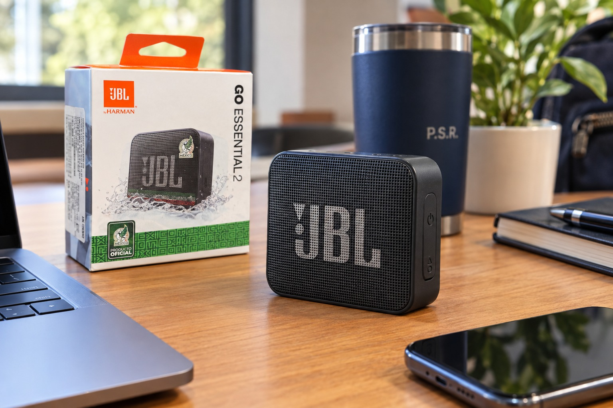
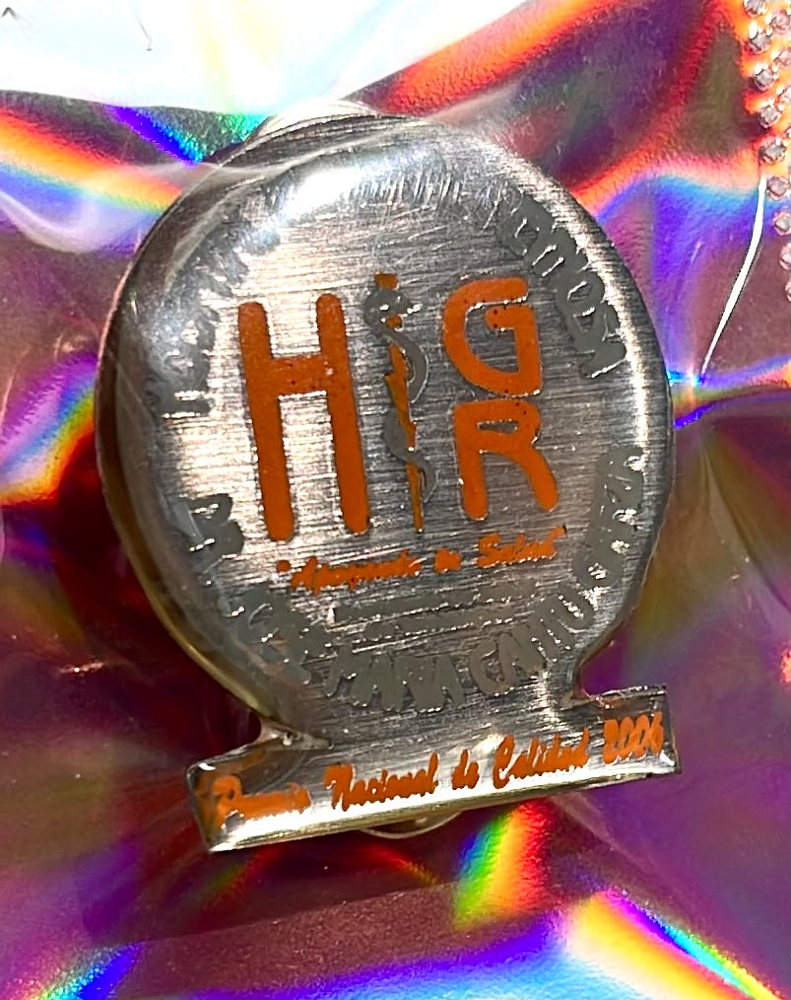

Premio: bocina bluetooth portátil JBL Go Essential 2, edición especial Selección Nacional de México, por la mejor justificación clínica del día. Entregado por el equipo de Gestión de Calidad.

Reconocimiento: pin con emblema del Hospital General Reynosa por su destacada justificación clínica.

Reconocimiento: pin con emblema del Hospital General Reynosa + detalle de cortesía, por su destacada justificación clínica.

